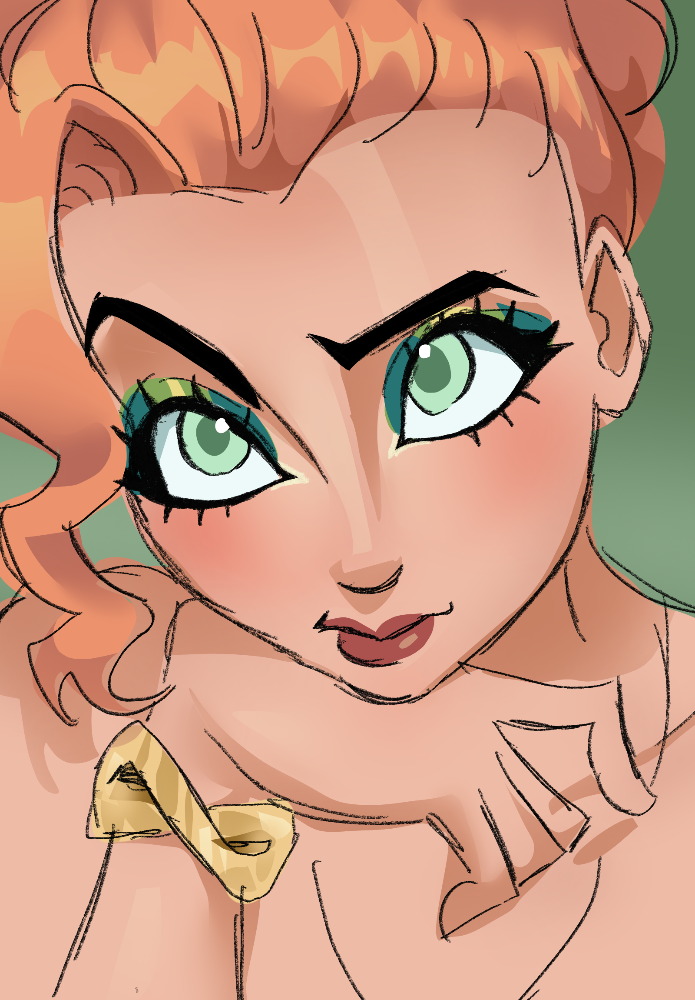
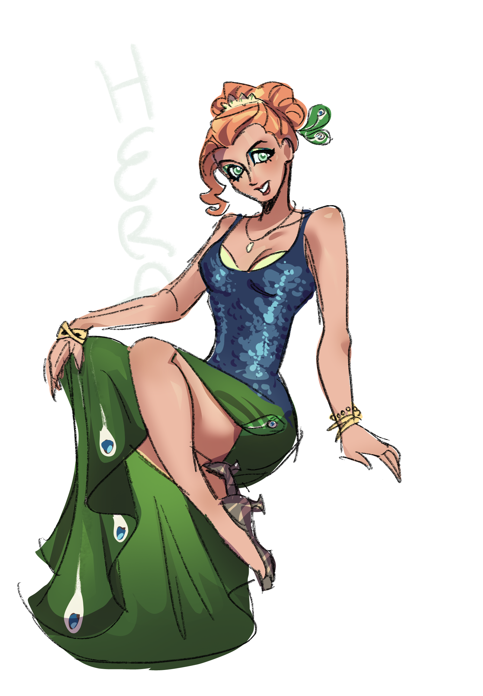

Information
เป็นมเหสีและเชษฐภคินี (พี่สาว) ของซูสในพระเจ้าโอลิมปัสของเทพปกรณัมและศาสนากรีก เป็นธิดาของโครนัสและไกอา หน้าที่หลักของพระนางคือเป็นเทพเจ้าแห่งสตรีและการสมรส
อะพอลโลและอาร์ทิมิส เฮอร์มีส เพอร์เซฟะนี ไดอะไนซัส เพอร์ซิอัส เฮราคลีส เฮเลนแห่งทรอย มิวส์ แอรีส ฮีบีและ
ฮิฟีสตัส
Myth
ฮีราแค้นเจ้าชายปารีสแห่งทรอยที่ไม่เลือกเธอในการประกวดความงาม (แอปเปิลทองคำ) เธอจึงเข้าข้างฝ่ายกรีกอย่างเต็มที่เพื่อให้ทรอยล่มสลาย ที่น่าสนใจคือ ครั้งหนึ่ง ซุสเคยสั่งห้ามไม่ให้ทวยเทพช่วยเหลือมนุษย์ในการทำสงคราม แต่ฮีร่าและทวยเทพผู้หนุนหลังกรีกทั้งหลายต่างรู้สึกอยากกำจัดกรุงทรอยไป จึงวางแผนให้ซุสหลับไหลขณะที่ทวยเทพไปช่วยกรีกทำสงคราม ฮีร่าเดินทางไปหาเทพฮิปนอสเพื่อขอให้เขาทำให้ซุสหลับ ในตอนแรกฮิปนอสปฏิเสธเพราะกลัวความพิโรธของซุส เนื่องจากในอดีตฮีราเคยหลอกให้เขาทำแบบนี้มาแล้วครั้งหนึ่ง และเขารอดจากความพิโรธของวุสได้หวุดหวิด เพื่อโน้มน้าวฮิปนอสในครั้งนี้ ฮีราจึงยื่นข้อเสนอว่าจะยก "พาสิเธีย" หนึ่งในเทพีแห่งความสง่างามและความผ่อนคลาย ซึ่งเป็นนางในฝันที่ฮิปนอสแอบรักมานานให้เป็นภรรยา พร้อมทั้งยอมสาบานต่อแม่น้ำสติกซ์ ว่าจะทำตามสัญญาจริงๆ ฮิปนอสจึงยอมตกลง หลังจากนั้นฮีราได้ไปขอยืม สายคาดเอวเสน่ห์ จากเทพีอโฟรไดท์ ที่ใครใส่แล้วจะทำให้ผู้พบเห็นเกิดความหลงใหลอย่างแกะไม่หลุด จากนั้นเธอก็แต่งตัวอย่างงดงามไปเข้าหาซุสที่ยอดเขาไอดา เมื่อซุสเห็นเฮราก็ตกหลุมเสน่ห์ทันทีและดึงเธอเข้าไปสวมกอด ในจังหวะนั้นเอง ฮิปนอสที่แปลงกายเป็นนกและซ่อนตัวอยู่ในสายหมอกบนต้นสนใกล้ๆ ก็ใช้พลังแห่งการนอนหลับเข้าสะกดซุสจนมหาเทพหลับสนิทคาอ้อมกอดของฮีรา ฮิปนอสจึงรีบเดินทางไปแจ้ง เทพโพไซดอนที่รอจังหวะอยู่ โพไซดอนจึงสามารถเข้าแทรกแซงและนำทัพชาวกรีกบุกโจมตีจนพลิกสถานการณ์กลับมาได้เปรียบในสงครามเมืองทรอยได้สำเร็จ